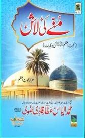

حضور پرنور، محبوب سبحانی رَحْمَۃُ اللہِ تَعَالٰی عَلَیْہسے کسی نے پوچھا : ’’ آپ رَحْمَۃُ اللہِ تَعَالٰی عَلَیْہنے اپنے آپ کو ولی کب سے جانا؟‘‘ ارشاد فرمایا کہ’’ میری عمر دس برس کی تھی میں مکتب میں پڑھنے جاتا تو فرشتے مجھ کو پہنچانے کے لئے میرے ساتھ جاتے اور جب میں مکتب میں پہنچتا تو وہ فرشتے لڑکوں سے فرماتے کہ’’ اللہ عَزَّ وَجَلَّ کے ولی کے بیٹھنے کے لیے جگہ فراخ کر دو۔‘‘
Book 2
میٹھے میٹھے اسلامی بھائیو! ہمارے غوثُ الاعظم عَلَیْہِ رَحْمَۃُ اللہِ الاکرم مادرزاد ولی تھے ۔ {۱} آپ رَحْمَۃُ اللہِ تَعَالٰی عَلَیْہابھی اپنی ماں کے پیٹ میں تھے اورماں کو جب چھینک آتی اور اس پر جب وہ اَلْحَمْدُ لِلّٰہ کہتیں تو آپ رَحْمَۃُ اللہِ تَعَالٰی عَلَیْہپیٹ ہی میں جواباً یَرْحَمُکِ اللّٰہ کہتے (الحقائق فی الحدائق ص۱۳۹) {۲} آپ رَحْمَۃُ اللہِ تَعَالٰی عَلَیْہیکُم رَمَضَانُ المبارَک بروز پیرصبحِ صادِق کے وَقت دنیا میں جلوہ گر ہوئے اُس وَقت ہونٹ آہِستہ آہِستہ حَرَکت کر رہے تھے اور اللہ اللہکی آواز آرہی تھی
Book 3سرکارِبغدادحُضورِ غوثِ پاکرَحْمَۃُ اللہِ تَعَالٰی عَلَیْہکے دیوانو!یقینامَحَبَّت کا اعلی دَرَجہ یہی ہے کہ اپنے محبوب کی ہر ہر ادا کو خوش دلی کے ساتھ اپنا لیا جائے ۔ لہٰذا ہوسکے تو لوٹے کی ٹونٹی ہمیشہ قبلہ رُخ رکھاکیجئے ۔ حُضورمُحدِّثِ اعظم پاکستان حضر ت مولانا سرداراحمد صاحِب رَحْمَۃُ اللہِ تَعَالٰی عَلَیْہلوٹے کے علاوہ اپنے نَعلینِ مُبارَکین بھی قبلہ رُخ ہی رکھا کرتے ۔ اَلْحَمْدُلِلّٰہ سگِ مدینہ عُفی عنہ ان دونوں اولیاءے کرامرَحْمَۃُ اللہِ تَعَالٰی عَلَیْہِمَاکی اِتِّباع میں حتَّی الامکان اپنے لوٹے اورجُوتیوں کا رُخ قبلہ ہی کی طرف رکھتاہے ۔ بلکہ خواہِش یہی ہوتی ہے کہ ہر چیز کا رُخ جانبِ قبلہ رہے ۔